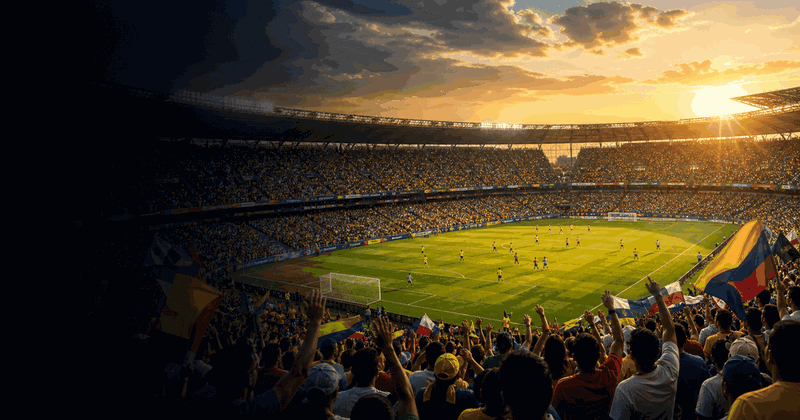

EN
English

Copa America
First final
1916
Latest champion
Argentina
Top title leaders
1
Argentina
Copa America wins
1921
1925
1927
1929
1937
1941
1945
1946
1947
1955
1957
1959
1991
1993
2021
2024
16
2
Uruguay
Copa America wins
1916
1917
1920
1923
1924
1926
1935
1942
1956
1959
1967
1983
1987
1995
2011
15
3
Brazil
Copa America wins
1919
1922
1949
1989
1997
1999
2004
2007
2019
9
4
Chile
Copa America wins
2015
2016
2
More football
Football topic
More finals, tournaments and calendar moments.
Copa America 2024 in the United States